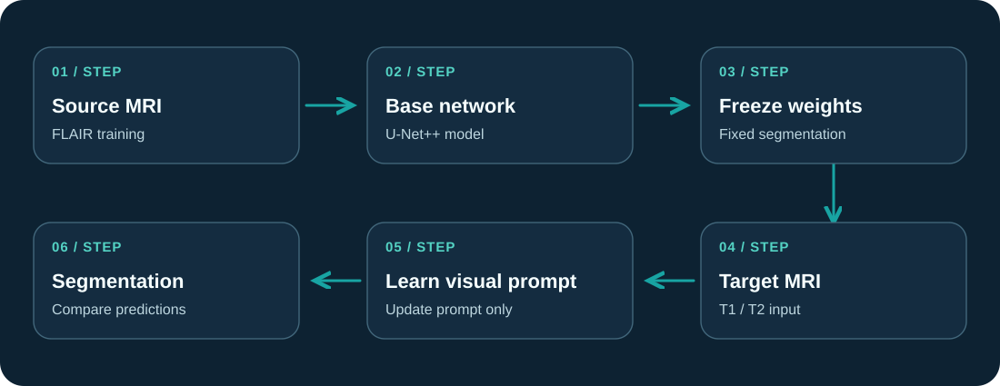

Establish a source-domain model
A segmentation network was trained using a source MRI modality, with the original weights retained as the reference model.
Parameter-efficient adaptation across MRI modalities.
Explored visual prompt tuning to adapt a pretrained MRI segmentation model to additional image modalities without retraining all model weights.
Segmentation models trained on one MRI sequence may not transfer cleanly to other sequences. The central question was whether a small learnable input adjustment could support adaptation while retaining a fixed base segmentation model.
Worked on segmentation modeling, modality adaptation experiments, visual prompt-tuning strategy and evaluation.
The diagram simplifies the key ideas into an original, conceptual workflow—not a reproduction of internal architecture.

Conceptual architecture · Simplified for public communication · Not a proprietary diagram
Concrete technical responsibilities, without private code or configuration details.
A segmentation network was trained using a source MRI modality, with the original weights retained as the reference model.
For target-modality inputs, a learnable prompt was optimized while the segmentation backbone remained frozen.
The method was explored on multiple MRI sequences with reference segmentation labels, comparing the ability to generalize between modalities.
This reduces the parameters updated during adaptation and is intended to avoid overwriting source-domain representations.
A small input-level adaptation can be easier to manage for each domain than separate full network versions.
Modality shifts differ in severity; a prompt that helps on one MRI sequence may be less effective on another.
The project summary reports encouraging qualitative results on FLAIR and T1 images with some degradation on T2. Reliable numerical segmentation scores were not available in the supplied summary, so none are asserted here.
Research-stage exploration using a benchmark dataset. No clinical validation, deployment or publication is claimed.
This case study is a high-level presentation of selected work. It does not disclose proprietary diagrams, internal configurations, private datasets, credentials or confidential business information. Publication should still be checked against applicable employer policies.